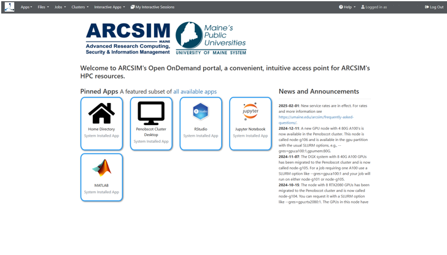
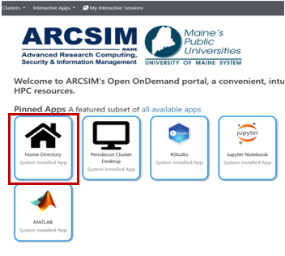
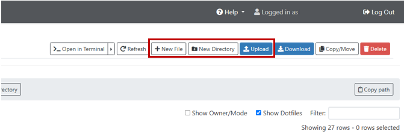
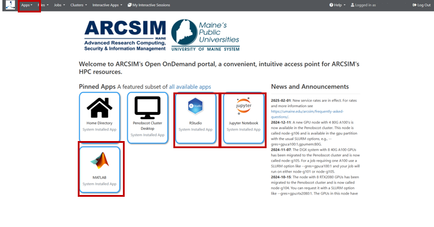

HPC Introduction¶
Welcome to the HPC introduction page. Here you will find details about high-performance computing and the University of Maine.
ARCSIM¶
The University of Maine unit, ARCSIM – Advanced Research Computing, Security, and Information, is a specialized unit for researchers of UMS and ASCC for technical support and consultation.
ARCSIM has HPC (High Performance Computing) options available for UMS researchers. Their on-premise HPC cluster, Penobscot, has CPU and GPU partitions.
Open OnDemand, an interactive portal, is available to use through web browser to access the Penobscot cluster and GUI apps.
The Penobscot cluster supports the use of AI and ML research needs.
CUI and federally regulated data please use compliant local solutions or GCCH Azure resources. For more information and resources for CUI and sensitive data please contact ARCSIM.
Tel: 207.581.3399 um.arcsim@maine.edu
CPU vs. GPU options¶
CPU (central processing unit) compute nodes used are for a wide range of general tasks such as operating system functions, application management, and general data processing.
CPUs use multiple cores to work on different complicated tasks.
CPUs are good for serial processing and have low latency.
GPU (graphical processing unit) compute nodes are used for fast, complex problem solving. They specialize in parallel processing, more specifically in graphics, AI, and ML.
GPUs use many cores with high throughput to process information.
ARCSIM HPC Clusters¶
ARCSIM has two clusters available to use for UMS researchers:
Katahdin Legacy Cluster
For use of older packages and modules
Penobscot Cluster
Utilizes most recent GPU hardware
Supports AI and ML
Terminal based SSH connections or OOD interface
118 CPU compute servers with a total of 4512 CPU cores
Up to 96 CPU cores and 1TB RAM per machine
6 GPU compute servers with 29 GPUs, including 14 A100’s
8x Nvidia A100 (40GB; SXM4, DGX system)
6x Nvidia A100 (80GB; 4x SXM4, 2x PCIe)
15x Nvidia L40 (48GB), A30 (24GB), RTX 2080Ti (11GB)
Pricing¶
All services offered at federally compliant rates. Pre-payments are not allowed under any circumstances.
Definitions used for calculating rates:
1 month = 730 hours and 1 TB = 1000 GB
Flagg or C. Dalton: Project Coordination, Development, Training
- Rate for advanced technical support, consulting services or custom development
Hour $40.00
CPU Compute Nodes¶
Haswell
General HPC use. Up to 24 cores available.
Skylake
General HPC use. Up to 36 cores, 240GB available.
EPYC
AMD EPYC 3 Milan machines for larger HPC jobs. Up to 96 cores available.
EPYC-HM
AMD EPYC 3 Milan high memory machines. Up to 32 cores available.
EPYC-GENOA
AMD EPYC 4 Genoa machines for larger HPC jobs. Up to 96 cores available.
GPU Compute Nodes Penobscot Only¶
node-g105: NVIDIA DGX A100
128 cores/256 threads using AMD EPYC™ 2 Rome CPUs
40 GB RAM each
total of 1 TB of RAM
node-g104: NVIDIA RTX 2080 Ti
Single 32-core AMD EPYC™ 1 Naples CPU
Total of 768 GB of RAM
node-g101: NVIDIA A100
32-core AMD EPYC™ Milan CPUs at 3.0 Ghz
80 GB RAM each
Total of 512 GB of RAM
node-g102: NVIDIA L40
32-core AMD EPYC™ Milan CPUs at 3.0 Ghz
48 GB RAM each
Total of 512 GB of RAM
node-g103: NVIDIA A30
32-core Intel Xeon Gold CPUs at 2.9 Ghz
24 GB RAM each
Total of 512 GB of RAM
Fiscal Year 25 CPU Pricing¶
1,000 CPU Core Hours
Billed per single CPU core utilized for one hour at $0.005 per CPU core hour.
Unit $5.00
give example
Fiscal Year 25 GPU Pricing¶
Tier 1 GPU Hour
One complete A100 GPU utilized for one hour
Hour $0.07
Tier 2 GPU Hour
One complete L40/A30/T4 GPU utilized for one hour
Hour $0.05
Tier 3 GPU Hour
One complete RTX2080 GPU utilized for one hour
Hour $0.03
Fiscal Year 25 Other Pricing¶
Virtual Machine
Dedicated node independent from other services. Billed based on hours in an active state within period. Storage billed separately (minimum 80 GB allocation)
vCPU per Month $2.50
Contact¶
For more information or questions, please contact the ARCSIM team
um.arcsim@maine.edu or fill out our service request form.
HPC and Cloud technical documentation is available in the ARCSIM Guides wiki.
For general information, please visit https://umaine.edu/arcsim/
HPC How-To Quick Start Guide¶
Open OnDemand¶
ARCSIM’s Open OnDemand (OOD) server is a web portal that provides access to UMS HPC resources via web browser. Getting started with HPC using OOD can be easier than using SSH and VNC sessions. Managing files, submitting compute jobs and running interactive apps (MATLAB, RStudio, etc) can all be done in a point-and-click interface within one or more browser tabs.
OOD Webinar: https://www.youtube.com/watch?v=OXwfER4NVrQ
VPN¶
ARCSIM HPC services are firewalled to outside traffic, you must be within the UMS networking system or connected to the UMS VPN service to access the HPC systems.
Link to download and connect to VPN: https://vpn.maine.edu/
{kind=link}
Select and download “Remote Access VPN”
Log in¶
Once connected to UMS VPN, follow the link below to find the OnDemand portal home directory https://login1.acg.maine.edu
To create an account, please contact ARCSIM, or fill out this form: https://umaine.edu/arcsim/arcsim-services-request/
You must log in with UMS credentials. Your username name will be the “first.last” of your maine.edu email.
Home options¶
{kind=link}
To work within the browser, you may now select and use any of the applications.
Open OnDemand File Upload¶
{kind=link}
Select “Home Directory” to upload files within the browser
{kind=link}
In the home file directory, select one of the button options to begin uploading data
SSH File UPload¶
To connect to the Penobscot cluster through SSH, you must generate a keypair from your workstation and add it to your authorized_keys file through OOD.
Follow the instructions on the ARCSIM wiki page here: https://github.com/umaine-research/ARCSIM-Guides/wiki/SSH-Access-Using-a-Keypair
Google Drive File Upload¶
To upload your data files on to Penobscot through google drive using Rclone, follow ARCSIM directions here: https://github.com/umaine-research/ARCSIM-Guides/wiki/Google-Drive-on-Penobscot
GUI Applications¶
{kind=link}
There are 3 GUI applications available to use on Penobscot
To use, just select from the pinned apps or in the “Apps” drop down list.
Software¶
There are preloaded software modules on the cluster. Some new packages may be installed by the user in their environment.
If admin rights are needed to install a new software module, please reach out to ARCSIM for approval. um.arcsim@maine.edu
Contact¶
For more information or questions, please contact the ARCSIM team. um.arcsim@maine.edu or fill out our service request form.
HPC and Cloud technical documentation is available in the ARCSIM Guides wiki.
For general information, please visit https://umaine.edu/arcsim/